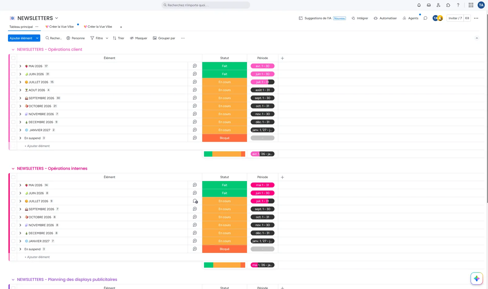
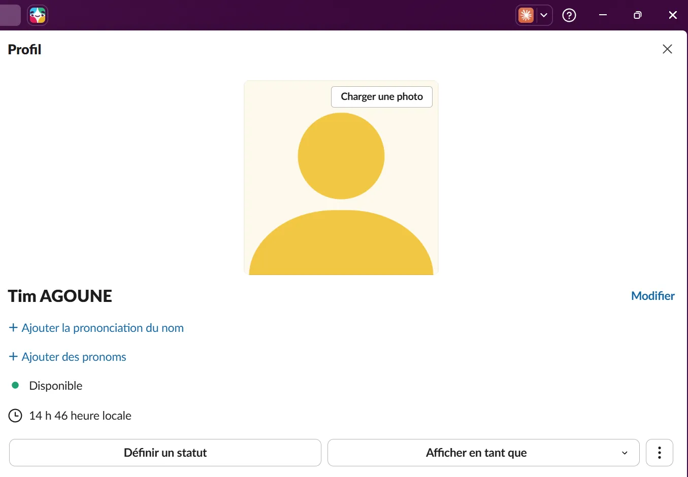

Tim Agoune
Tim Agoune01Objectif
Participer au pilotage des projets digitaux de l'entreprise : cadrer les besoins exprimés par la direction, la rédaction ou les clients, rédiger les briefs, suivre les échéances et coordonner les différents intervenants.
02Démarche
Des projets livrés en conditions réelles : la refonte du site en cours d'intégration, des événements qui se sont tenus avec leurs supports, et des briefs devenus des outils de travail pour l'équipe. J'ai appris qu'un besoin bien formulé dès le départ, dans un brief écrit, évite beaucoup d'allers-retours par la suite.


03Moyens et outils
- Monday pour la planification et le suivi des projets : newsletters, sites, vidéos, actions commerciales ;
- Slack pour la coordination d'équipe.